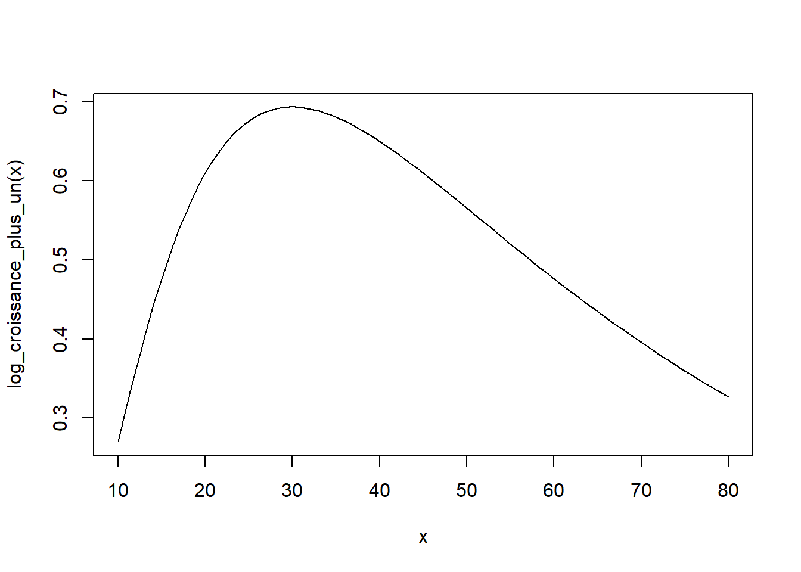
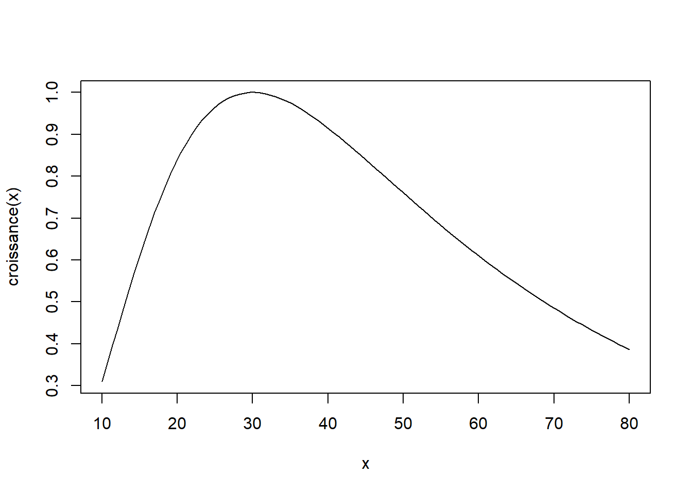
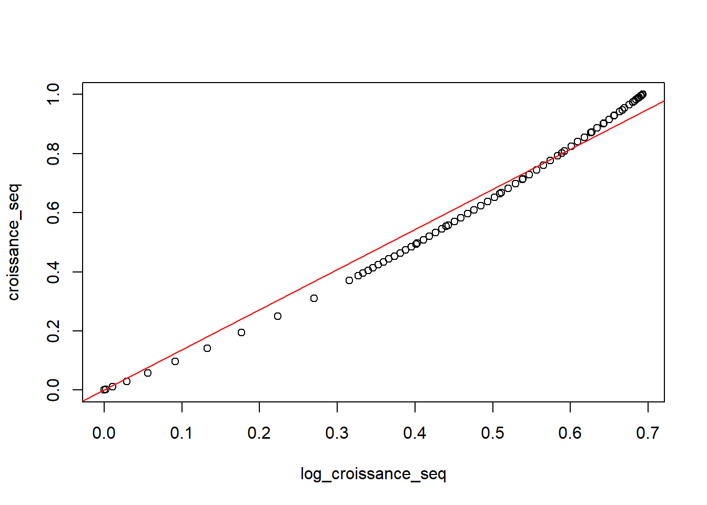
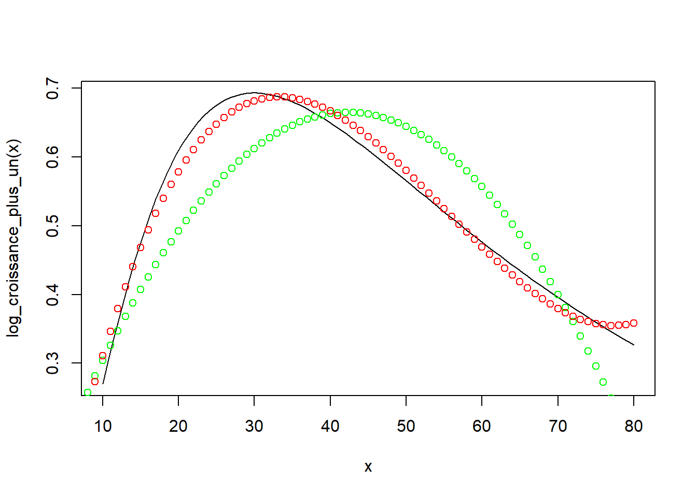

Max <- log(2) # log(cm)
Dopt <- 30 # cm
K <- 0.8Croissance
Modèle
Les paramètres du modèle de croissance dans @Herault2011 sont typiquement les suivants :
La fonction de croissance est
log_croissance_plus_un <- function(d) {
return(Max * exp(-1 / 2 * (log(d / Dopt) / K)^2))
}Le paramètre \(K\) n’est pas dans le logarimthme comme dans l’article, sinon la croissance optimale ne correspond pas à \(d = Dopt\). L’équation correcte est en annexe 3 de l’article.
@canham2004 ont écrit un modèle log-normal pour la croissance mais dans @Herault2011 c’est le log de la croissance qui est décrit. Si le modèle était encore celui de Canham, il ne devrait pas y avoir de log dans l’exponentielle : la densité devrait être de la forme d’une loi normale. Le modèle n’est donc pas “presque une densité de loi log-normale”, mais doit plutôt être considéré comme une forme ad-hoc qui décrit bien l’ontogénie.
La courbe est :
curve(log_croissance_plus_un, from = 10, to = 80)
C’est ennuyeux parce qu’on comprend mieux intuitivement que la croissance (pas son logarithme) est modulée par le diamètre selon la courbe précédente. Mais en réalité, le modèle se comporte presque comme si la croissance (et non son logarithme) était utilisée comme variable de sortie :
croissance <- function(x) exp(log_croissance_plus_un(x)) - 1
curve(croissance, from = 10, to = 80)
L’explication est que la relation entre la croissance et son logarithme (de la croissance +1), pour chaque valeur de diamètre, est presque proportionnelle :
# Croissance selon le modèle entre 1 et 80 cm
diameters <- 1:80
log_croissance_seq <- sapply(diameters, log_croissance_plus_un)
croissance_seq <- sapply(diameters, croissance)
plot(croissance_seq ~ log_croissance_seq)
lm_croissance <- lm(croissance_seq ~ log_croissance_seq + 0)
abline(b = lm_croissance$coefficients[1], a = 0, col = "red")
On peut donc indifféremment modéliser la croissance (Canham) ou le logarithme de la croissance +1 (Hérault) comme une valeur maximale multipliée par le facteur de taille contenu dans l’exponentielle sans changer les résultats, à une constante multiplicative près, qui se confond avec le choix des unités.
Autres ajustements possibles
Peut-on remplacer ce modèle par un modèle polynomial ?
# Diamètre au carré et au cube
diameters_squared <- diameters^2
diameters_3 <- diameters^3Modèle alternatif \(d\) et \(d^2\)
lm_alt2 <- lm(log_croissance_seq ~ diameters + diameters_squared)
summary(lm_alt2)
Call:
lm(formula = log_croissance_seq ~ diameters + diameters_squared)
Residuals:
Min 1Q Median 3Q Max
-0.12819 -0.07471 -0.01162 0.07408 0.15282
Coefficients:
Estimate Std. Error t value
(Intercept) 4.576e-02 2.781e-02 1.645
diameters 2.926e-02 1.585e-03 18.462
diameters_squared -3.457e-04 1.896e-05 -18.233
Pr(>|t|)
(Intercept) 0.104
diameters <2e-16 ***
diameters_squared <2e-16 ***
---
Signif. codes:
0 '***' 0.001 '**' 0.01 '*' 0.05 '.' 0.1 ' ' 1
Residual standard error: 0.08085 on 77 degrees of freedom
Multiple R-squared: 0.8166, Adjusted R-squared: 0.8118
F-statistic: 171.4 on 2 and 77 DF, p-value: < 2.2e-16Modèle alternatif de degré 3
lm_alt3 <- lm(log_croissance_seq ~ diameters + diameters_squared + diameters_3)
summary(lm_alt3)
Call:
lm(formula = log_croissance_seq ~ diameters + diameters_squared +
diameters_3)
Residuals:
Min 1Q Median 3Q Max
-0.05878 -0.01659 0.00050 0.01542 0.10972
Coefficients:
Estimate Std. Error t value
(Intercept) -1.684e-01 1.230e-02 -13.69
diameters 6.003e-02 1.307e-03 45.93
diameters_squared -1.290e-03 3.737e-05 -34.51
diameters_3 7.769e-06 3.034e-07 25.61
Pr(>|t|)
(Intercept) <2e-16 ***
diameters <2e-16 ***
diameters_squared <2e-16 ***
diameters_3 <2e-16 ***
---
Signif. codes:
0 '***' 0.001 '**' 0.01 '*' 0.05 '.' 0.1 ' ' 1
Residual standard error: 0.02623 on 76 degrees of freedom
Multiple R-squared: 0.9809, Adjusted R-squared: 0.9802
F-statistic: 1304 on 3 and 76 DF, p-value: < 2.2e-16Comparaison des ajustements
Figure avec la courbe et les prévisions des modèles polynomiaux de degrés 2 et 3 :
curve(log_croissance_plus_un, from = 10, to = 80)
# Degré 2
fit2 <-
lm_alt2$coefficients[1] +
lm_alt2$coefficients[2] * diameters +
lm_alt2$coefficients[3] * diameters_squared
# Points verts
points(y = fit2, x = diameters, col = "green")
# Degré 3
fit3 <-
lm_alt3$coefficients[1] +
lm_alt3$coefficients[2] * diameters +
lm_alt3$coefficients[3] * diameters_squared +
lm_alt3$coefficients[4] * diameters_3
# Points rouges
points(y = fit3, x = diameters, col = "red")
Le polynôme de degré 2 est forcément symétrique et concave, donc on perd les caractéristiques du modèle (asymétrie et kurtosis). Le polynôme de degré 3 a ces propriétés mais la croissance augmente à nouveau aux diamètres extrêmes.